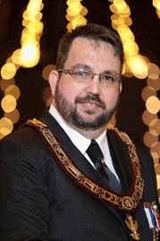
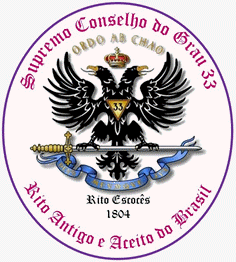
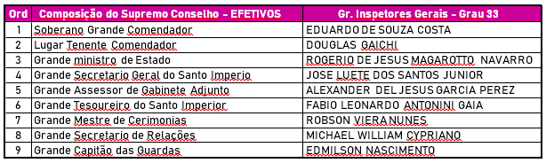

Maçonaria brasileira no terceiro milênio da era cristã
Por: Henry Díaz
São Paulo.
Novembro de 2019
Para: diariomasonico.com
Com motivo de dar a conhecer a Maçonaria no Brasil ao mundo de fala hispana, assim como permitir que os membros de uma e outra potência brasileira, possam conhecer quantos corpos existem, quem lhes representa, a maneira de pensar deles em alguns tópicos gerais, além de seus origens, membros e representantes oficiais, sem qualificar um ou outro, de ser regular ou não, pelo contrário, respeitando cada um adequadamente, o leitor pode defini-lo, se assim o considerar, ao ler a origem deles. Nosso interesse é que todos tenham o mesmo lugar por onde expressar e dar a conhecer suas respostas, assim todos possam conhecer o que cada um pensa dos mesmos temas e talvez, possam aprender uns dos outros, como melhorar o que deve ser melhorado, como corrigir o que deve ser corrigido, e até o que tem em comum e diferente.
Na maçonaria venezuelana, onde eu inicie, se usa uma expressão que ainda não vi aqui no Brasil, “família venezolana” para referir-se à maçonaria pela sua qualidade universal, acho que em cada país, poderia ser igual, são famílias nacionais, de uma mesma família universal, com seus próprios problemas e até suas próprias diferencias culturais pero o mesmo amor pela instituição, pois, quem pode entrar na mente e o coração de cada um e saber se seu amor e verdadeiro e sua consciência está limpa? A maneira de pensar, falar e fazer as coisas e uma guia para aproximar-se a entender mais e melhor o que cada um é realmente, mas, como podemos saber o que pensa e fala se não existe um médio que mostre, de maneira conjunta, suas palavras e ações? Queremos isso, humildemente, ser esse médio para cada um.
Enviaremos as mesmas perguntas a todos os representantes, tanto nos ritos como no simbolismo, e esperamos que possam responder gentilmente; começaremos com Eduardo de Souza Costa, o primeiro que enviamos as perguntas e respondeu.

Nome: Eduardo de Souza Costa
Casado: 25 anos
Esposa: Deise Luci Balbino Costa
Filhos: Claudio Eduardo Balbino Costa
Victor Hugo Balbino Costa
Júlio Cezar Balbino Costa
Maçonaria: Grau Rito Escocês 33º
Cargos: Loja Azuis:
Grande Chanceler Guardas dos Selos – Grande Loja do Brasil – 2012;
Venerável Mestre da ARLS Guardiões da Palavra 69 – Or.: Rio de Janeiro – 2012;
Delegado Regional Rio de Janeiro – Grande Oriente Independente de São Paulo – 2014;
Grão-Mestre Adjunto do Grande Oriente Independente de São Paulo – 2015/2016;
Conselheiro e co-fundador da Grande Loja de Maçons Livres e Aceitos do Brasil – 2016
Loja Vermelhas:
Soberano Grande Comendador do Supremo Conselho do Grau 33 Rito Antigo e Aceito do Brasil – Rito Escocês 1804 – 2016;
Vice-Presidente da Confederação Mundial Supremo Conselho do Grau 33 Rito Antigo e Aceito do Brasil – Rito Escocês 1804 -2017/2019;
Presidente da Confederação Mundial Supremo Conselho do Grau 33 Rito Antigo e Aceito do Brasil – Rito Escocês 1804 -2019/2021;
Currículo profano:
Graduado e Gestão de Tecnologia da Informação – UNIP
Pós-Graduado em Gestão de Negócios – FGV
MBA em Inovação tecnológica – FGV
Curso de Extensão em Formação de Executivos em TI – IDCE
Atualmente estou como Gerente Executivo de Infraestrutura e Segurança de TI – SONDA Brasil

Nosso Supremo conselho teve seu inicio com o Almirante da frota no Brasil David Jewett Nascido em 1772 em montville, Jewett foi fundamental na introdução do rito antigo e aceito no Brasil e Em uma curta viagem ao EUA recebeu um diploma emitido em 1826 pelo Dewitt Clinton representante Supremo Grande Consistório de Joseph Cerneau, que nomeia Jewett como vice-grande inspetor geral do Brasil o diploma original foi emitido em Nova York em 3 de novembro de 1826, passando uma autorização para abrir um Consistório do REAA no Brasil da qual Jewett não fez uso dela, pois após a chegada de Montezuma reuniu-se de decidiu realizar uma união.
1832, devidamente autorizado pelo Supremo Conselho para a Bélgica. Em 1848 fundiu-se com o outro Supremo Conselho fundado pelo Commodoro David Jewett, oficial da marinha brasileira e filho da União americana que para tal fim obtiveram autorização do Supremo Conselho (Jurisdição Norte) dos Estados Unidos. Essa autorização, dada na ignorância da existência das Cartas Patentes confiadas a Jequitinhonha pela Bélgica, fez com que, ao tempo, existissem no Brasil dois Supremos Conselhos que poderiam ambos ser considerados legítimos.
1833 – Tendo conferido o grau 33º a José Bonifácio e a outros maçons do antigo Grande Oriente que funcionava no Rito Moderno, o que era irregular, Montezuma, que exercia as funções de Soberano Grande Comendador da Maçonaria, provoca descontentamento do Lugar-Tenente Soberano Grande Comendador, David Jewett, que se demitiu. Jewett, Capitão-de-mar-e-guerra norte-americano, depois Chefe de Esquadra da Marinha Brasileira era possuidor de uma patente do Soberano Grande Consistório dos Estados Unidos, em Nova York, para estabelecer no Império do Brasil um Consistório do grau 32º, datada de 4 de novembro de 1826. Foi esta a razão que levou Montezuma a convida-lo para participar do seu Supremo Conselho como Lugar-Tenente Soberano Grande Comendador.
2016 – No dia 23 de Setembro de 2016, o Supremo Consejo General de los Soberanos Grandes Inspectores del Grado 33° del Rito Antiguo y Aceptado Cerneau´s Rite, Entregou a carta patente do Supremo Consejo del Grado 33° del Rito Antiguo y Aceptado Cerneau´s Rite 1804 de la República Federativa de Brasil ao Irmão Eduardo de Souza Costa.
2016 - No dia 27 de Dezembro de 2016 o Supremo Consejo General de los Soberanos Grandes Inspectores del Grado 33° del Rito Antiguo y Aceptado Cerneau´s Rite, Resolveu nomear como representante do Conselho Geral Supremo do 33º Grau do Rito Antigo e Aceito o Rite 1804 de Cerneau, ao I.·.P.·.H.·. Eduardo de Souza Costa - Soberano Grande Comendador da República Federativa do Brasil.
Relações nacionais e internacionais do Soberano Conselho?
Ancient and Accepted Scottish Cerneau RIte - 1804 - Southern Jurisdiction
Supremo Consejo Rito Antiguo Aceptado Paraguay
Excelso Conselho da Maçonaria Filosófica – Graus Filosóficos do Rito Escocês Antigo e Aceito. Rio de Janeiro
Soberano Santuário Do Brasil - Rito Primitivo De Memphis
Membros atuais?

Objetivos?
Nossos objetivos são dar sustentação, assistência e harmonia aos ensinamentos
dos Altos Graus do RAA, através dos Corpos Filosóficos, fortalecimento,
ampliação, afirmação e divulgação dos objetivos e das finalidades da Instituição
Maçônica dos Graus Superiores e o desenvolvimento moral e espiritual de seus
membros por meio de sua pratica e respeito as leis da nação.
Suas considerações como S.·. G.·. C.·. da maçonaria brasileira na atualidade?
Em uma sociedade perpassada por uma grave crise conjuntural, maçonaria como instituição que prima pela razão e liberdade de pensamento se mantém incólume ao passar do tempo.
Devendo seus membros se posicionam criticamente diante dessa situação e procuram fazer sua parte em prol de um mundo melhor.
Hoje vivemos em tempo de crise. A Maçonaria está atenta para se adaptar aos novos tempos, temos que estar muito atentos a estes sintomas de inquietação que vão proliferando, mas não podemos cair num certo catastrofismo, nem pensar que a democracia está condenada e que se caminha no sentido de uma certa anarquização das respostas políticas.
Somos a única instituição no mundo capaz de se apresentar diante da história como agentes catalisadores da mudança, sem que confundamos nossas ações com as ações próprias de um partido político. Na minha avaliação a maçonaria está acima e além da luta de classes. Ela e só ela!
Suas considerações do que deveria ser a maçonaria brasileira no futuro mediato (3-5-10 anos).
Em minha opinião, não se pode avaliar o futuro da Maçonaria no mundo e no Brasil. Se analisarmos as potências brasileiras ditas regulares, será que daqui a 500 a 1000 anos existirão templos? Haverá necessidade de templos? Qual será a concepção do GADU nesta época? Existirão potências maçônicas? Haverá sessões maçônicas virtuais? Enfim uma série de perguntas, todas elas baseadas em fatos que temos a nossa disposição no presente, e em cima dos quais podemos especular sobre o futuro, mesmo que nossa imaginação esteja errada. Mas podemos fazer uma projeção ideias. Porque não?
Em primeiro para que o futuro da maçonaria seja diferente, temos que mudar os nossos pensamentos e usar aquilo que nos e ensinado pelo passado, praticando no presente e assim projetar e mudar o futuro.
Considerações da maçonaria mundial e especialmente a americana.
A Maçonaria Mundial, está sofrendo várias adaptações e tentando acompanhar o novo movimento político e também se aproximando dos mais jovens, pois não podemos ficar sempre como visto de “antigos” defendendo com unhas e dentes a concepção da Maçonaria como clube social e fraternal, dedicado à filantropia, pois nosso futuro dependo das gerações vindouras sedentos de estudo e análise, de obtenção de conhecimentos, de debate e aprofundamento e entendimento das lições dos rituais e passando para elas os valores e virtudes para que possamos manter vivo a história e governos nos países.
A Maçonaria Regular americana desenvolveu-se, assim, sem concorrência de outras orientações, privilegiando a Fraternidade entre os seus membros e a Solidariedade.
Não procuro fazer comparativos, mas buscando sempre um ideal de harmonização para que possamos juntos conquistar os nossos ideais.
Palavras de agradecimento aos que considera foram ou são seus mestres.
As minhas primeiras palavras são de agradecimento ao Grande Arquiteto do Universo – DEUS;
Agradeço a minha esposa e meus filhos que me fortalecem espiritualmente através do convívio familiar de muita alegria, paz e harmonia.
Agradeço também ao mestre dos passado que muito me ensinam ainda, citando a pessoa Mestre Maçom Rodrigo Medina e Juan Vicente Núñez.
E também a todos que me ajudam e apóiam neste árduo caminho.
Algo mais que você considere deva ser dito?
Sabemos que somos e que a verdade que liberta e restaura. Estamos em hora de buscar a verdade. Se estamos maçons, absolutamente sinceros, esta busca elas impõem lideranças maçônicas, enorme responsabilidade neste momento de transição de vida do pais e ver emergir para novo tempo, percorrendo um caminho diferenciado que nós leve para um futuro de dignidade.
Esta é uma possibilidade impar que o “diáriomasonico.com” através do Irmão Henry Diaz, nos ofertou, onde aproveito para um chamamento ao dever cívico e maçônico, como fizeram as lojas, potencias e Supremos Conselho se unam.
________________________________________________________